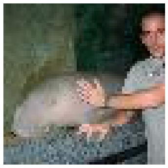
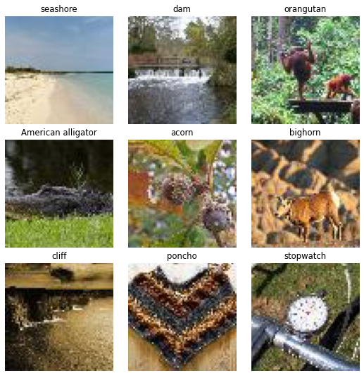
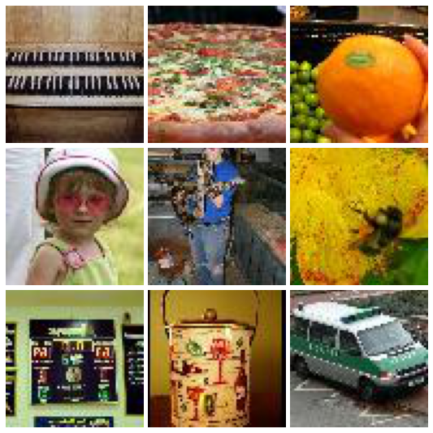
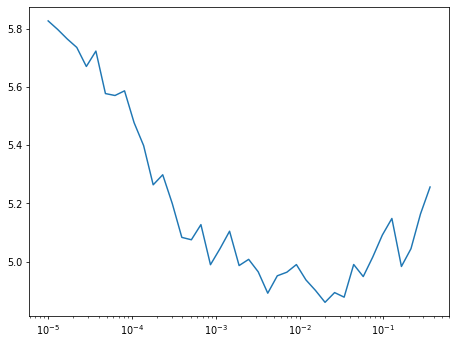
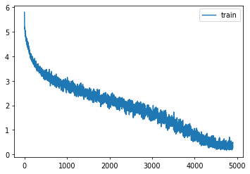
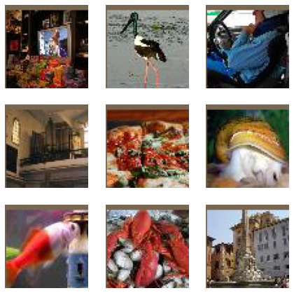
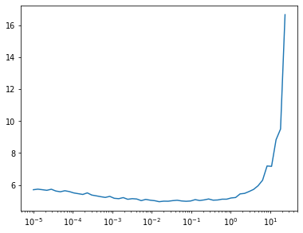
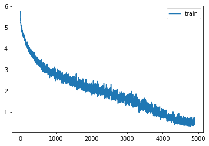
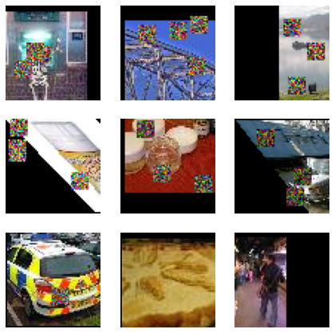
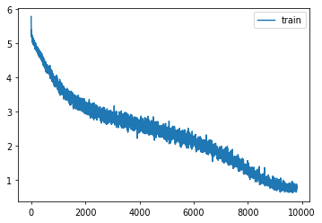

import os
# os.environ['CUDA_VISIBLE_DEVICES']='2'Tiny Imagenet
import shutil,timm,os,torch,random,datasets,math
import fastcore.all as fc, numpy as np, matplotlib as mpl, matplotlib.pyplot as plt
import k_diffusion as K, torchvision.transforms as T
import torchvision.transforms.functional as TF,torch.nn.functional as F
from torch.utils.data import DataLoader,default_collate
from pathlib import Path
from torch.nn import init
from fastcore.foundation import L
from torch import nn,tensor
from operator import itemgetter
from torcheval.metrics import MulticlassAccuracy
from functools import partial
from torch.optim import lr_scheduler
from torch import optim
from torchvision.io import read_image,ImageReadMode
from glob import glob
from fastAIcourse.datasets import *
from fastAIcourse.conv import *
from fastAIcourse.learner import *
from fastAIcourse.activations import *
from fastAIcourse.init import *
from fastAIcourse.sgd import *
from fastAIcourse.resnet import *
from fastAIcourse.augment import *
from fastAIcourse.accel import *
from fastAIcourse.training import *from fastprogress import progress_bartorch.set_printoptions(precision=5, linewidth=140, sci_mode=False)
torch.manual_seed(1)
mpl.rcParams['figure.dpi'] = 70
set_seed(42)
if fc.defaults.cpus>8: fc.defaults.cpus=8Data processing
path_data = Path('Data')
path_data.mkdir(exist_ok=True)
path = path_data/'tiny-imagenet-200'url = 'http://cs231n.stanford.edu/tiny-imagenet-200.zip'
if not path.exists():
path_zip = fc.urlsave(url, path_data)
shutil.unpack_archive('Data/tiny-imagenet-200.zip', 'data')bs = 512class TinyDS:
def __init__(self, path):
self.path = Path(path)
self.files = glob(str(path/'**/*.JPEG'), recursive=True)
def __len__(self): return len(self.files)
def __getitem__(self, i): return self.files[i],Path(self.files[i]).parent.parent.nametds = TinyDS(path/'train')tds[0]('Data/tiny-imagenet-200/train/n02074367/images/n02074367_322.JPEG',
'n02074367')path_anno = path/'val'/'val_annotations.txt'
anno = dict(o.split('\t')[:2] for o in path_anno.read_text().splitlines())class TinyValDS(TinyDS):
def __getitem__(self, i): return self.files[i],anno[os.path.basename(self.files[i])]vds = TinyValDS(path/'val')vds[0]('Data/tiny-imagenet-200/val/images/val_240.JPEG', 'n02883205')len(tds)100000class TfmDS:
def __init__(self, ds, tfmx=fc.noop, tfmy=fc.noop): self.ds,self.tfmx,self.tfmy = ds,tfmx,tfmy
def __len__(self): return len(self.ds)
def __getitem__(self, i):
x,y = self.ds[i]
return self.tfmx(x),self.tfmy(y)id2str = (path/'wnids.txt').read_text().splitlines()
str2id = {v:k for k,v in enumerate(id2str)}xmean,xstd = (tensor([0.47565, 0.40303, 0.31555]), tensor([0.28858, 0.24402, 0.26615]))def tfmx(x):
img = read_image(x, mode=ImageReadMode.RGB)/255
return (img-xmean[:,None,None])/xstd[:,None,None]def tfmy(y): return tensor(str2id[y])tfm_tds = TfmDS(tds, tfmx, tfmy)
tfm_vds = TfmDS(vds, tfmx, tfmy)xi,yi = tfm_tds[0]
id2str[yi]'n02074367'def denorm(x): return (x*xstd[:,None,None]+xmean[:,None,None]).clip(0,1)show_image(denorm(xi));
dltrn = DataLoader(tfm_tds, batch_size=bs, shuffle=True, num_workers=8)xb,yb = b = next(iter(dltrn))show_image(denorm(xb[0]));all_synsets = [o.split('\t') for o in (path/'words.txt').read_text().splitlines()]
synsets = {k:v.split(',', maxsplit=1)[0] for k,v in all_synsets if k in id2str}titles = [synsets[id2str[o]] for o in yb]
', '.join(titles[:20])'seashore, dam, orangutan, American alligator, acorn, bighorn, cliff, poncho, stopwatch, monarch, cliff dwelling, poncho, chest, mantis, standard poodle, gazelle, dam, sombrero, barn, projectile'show_images(denorm(xb[:9]), titles=titles[:9], imsize=2.5)
dls = DataLoaders(*get_dls(tfm_tds, tfm_vds, bs=bs, num_workers=8))Basic model
def tfm_batch(b, tfm_x=fc.noop, tfm_y = fc.noop): return tfm_x(b[0]),tfm_y(b[1])tfms = nn.Sequential(T.Pad(4), T.RandomCrop(64),
T.RandomHorizontalFlip(),
RandErase())
augcb = BatchTransformCB(partial(tfm_batch, tfm_x=tfms), on_val=False)act_gr = partial(GeneralRelu, leak=0.1, sub=0.4)
iw = partial(init_weights, leaky=0.1)nfs = (32,64,128,256,512,1024)def get_dropmodel(act=act_gr, nfs=nfs, norm=nn.BatchNorm2d, drop=0.1):
layers = [nn.Conv2d(3, nfs[0], 5, padding=2)]
# layers += [ResBlock(nfs[0], nfs[0], ks=3, stride=1, act=act, norm=norm)]
layers += [ResBlock(nfs[i], nfs[i+1], act=act, norm=norm, stride=2)
for i in range(len(nfs)-1)]
layers += [nn.AdaptiveAvgPool2d(1), nn.Flatten(), nn.Dropout(drop)]
layers += [nn.Linear(nfs[-1], 200, bias=False), nn.BatchNorm1d(200)]
return nn.Sequential(*layers).apply(iw)learn = TrainLearner(get_dropmodel(), dls, F.cross_entropy, cbs=[SingleBatchCB(), augcb, DeviceCB()])
learn.fit(1)
xb,yb = learn.batch
show_images(denorm(xb.cpu())[:9], imsize=2.5)
learn.summary()Tot params: 19775824; MFLOPS: 303.7| Module | Input | Output | Num params | MFLOPS |
|---|---|---|---|---|
| Conv2d | (512, 3, 64, 64) | (512, 32, 64, 64) | 2432 | 9.8 |
| ResBlock | (512, 32, 64, 64) | (512, 64, 32, 32) | 57792 | 58.7 |
| ResBlock | (512, 64, 32, 32) | (512, 128, 16, 16) | 230272 | 58.7 |
| ResBlock | (512, 128, 16, 16) | (512, 256, 8, 8) | 919296 | 58.7 |
| ResBlock | (512, 256, 8, 8) | (512, 512, 4, 4) | 3673600 | 58.7 |
| ResBlock | (512, 512, 4, 4) | (512, 1024, 2, 2) | 14687232 | 58.7 |
| AdaptiveAvgPool2d | (512, 1024, 2, 2) | (512, 1024, 1, 1) | 0 | 0.0 |
| Flatten | (512, 1024, 1, 1) | (512, 1024) | 0 | 0.0 |
| Dropout | (512, 1024) | (512, 1024) | 0 | 0.0 |
| Linear | (512, 1024) | (512, 200) | 204800 | 0.2 |
| BatchNorm1d | (512, 200) | (512, 200) | 400 | 0.0 |
opt_func = partial(optim.AdamW, eps=1e-5)lr_cbs = [DeviceCB(), augcb, MixedPrecision(), ProgressCB()]learn = Learner(get_dropmodel(), dls, F.cross_entropy, cbs=lr_cbs, opt_func=opt_func)
learn.lr_find()
0.00% [0/10 00:00<?]
20.92% [41/196 03:15<12:20 5.256]

metrics = MetricsCB(accuracy=MulticlassAccuracy())
cbs = [DeviceCB(), metrics, ProgressCB(plot=True), MixedPrecision()]epochs = 25
lr = 0.1
tmax = epochs * len(dls.train)
sched = partial(lr_scheduler.OneCycleLR, max_lr=lr, total_steps=tmax)
xtra = [BatchSchedCB(sched), augcb]
learn = Learner(get_dropmodel(), dls, F.cross_entropy, lr=lr, cbs=cbs+xtra, opt_func=opt_func)learn.fit(epochs)| accuracy | loss | epoch | train |
|---|---|---|---|
| 0.112 | 4.370 | 0 | train |
| 0.169 | 3.852 | 0 | eval |
| 0.224 | 3.580 | 1 | train |
| 0.245 | 3.385 | 1 | eval |
| 0.272 | 3.244 | 2 | train |
| 0.241 | 3.557 | 2 | eval |
| 0.306 | 3.025 | 3 | train |
| 0.228 | 3.717 | 3 | eval |
| 0.336 | 2.856 | 4 | train |
| 0.280 | 3.414 | 4 | eval |
| 0.356 | 2.741 | 5 | train |
| 0.252 | 3.563 | 5 | eval |
| 0.381 | 2.611 | 6 | train |
| 0.328 | 3.046 | 6 | eval |
| 0.406 | 2.480 | 7 | train |
| 0.311 | 3.181 | 7 | eval |
| 0.426 | 2.379 | 8 | train |
| 0.356 | 2.861 | 8 | eval |
| 0.453 | 2.255 | 9 | train |
| 0.353 | 2.905 | 9 | eval |
| 0.471 | 2.166 | 10 | train |
| 0.381 | 2.751 | 10 | eval |
| 0.489 | 2.070 | 11 | train |
| 0.388 | 2.806 | 11 | eval |
| 0.513 | 1.963 | 12 | train |
| 0.451 | 2.325 | 12 | eval |
| 0.531 | 1.870 | 13 | train |
| 0.455 | 2.388 | 13 | eval |
| 0.554 | 1.753 | 14 | train |
| 0.478 | 2.210 | 14 | eval |
| 0.587 | 1.610 | 15 | train |
| 0.510 | 2.089 | 15 | eval |
| 0.617 | 1.470 | 16 | train |
| 0.524 | 2.032 | 16 | eval |
| 0.655 | 1.311 | 17 | train |
| 0.537 | 1.999 | 17 | eval |
| 0.695 | 1.142 | 18 | train |
| 0.547 | 1.980 | 18 | eval |
| 0.743 | 0.944 | 19 | train |
| 0.566 | 1.912 | 19 | eval |
| 0.794 | 0.748 | 20 | train |
| 0.581 | 1.889 | 20 | eval |
| 0.842 | 0.579 | 21 | train |
| 0.586 | 1.890 | 21 | eval |
| 0.877 | 0.461 | 22 | train |
| 0.594 | 1.857 | 22 | eval |
| 0.906 | 0.367 | 23 | train |
| 0.594 | 1.874 | 23 | eval |
| 0.910 | 0.351 | 24 | train |
| 0.593 | 1.889 | 24 | eval |

torch.save(learn.model, 'models/inettiny-basic-25')Deeper
def res_blocks(n_bk, ni, nf, stride=1, ks=3, act=act_gr, norm=None):
return nn.Sequential(*[
ResBlock(ni if i==0 else nf, nf, stride=stride if i==n_bk-1 else 1, ks=ks, act=act, norm=norm)
for i in range(n_bk)])nbks = (3,2,2,1,1)def get_dropmodel(act=act_gr, nfs=nfs, nbks=nbks, norm=nn.BatchNorm2d, drop=0.2):
layers = [ResBlock(3, nfs[0], ks=5, stride=1, act=act, norm=norm)]
layers += [res_blocks(nbks[i], nfs[i], nfs[i+1], act=act, norm=norm, stride=2)
for i in range(len(nfs)-1)]
layers += [nn.AdaptiveAvgPool2d(1), nn.Flatten(), nn.Dropout(drop)]
layers += [nn.Linear(nfs[-1], 200, bias=False), nn.BatchNorm1d(200)]
return nn.Sequential(*layers).apply(iw)learn = TrainLearner(get_dropmodel(), dls, F.cross_entropy, cbs=[SingleBatchCB(), augcb, DeviceCB()])
learn.fit(1)
xb,yb = learn.batch
show_images(denorm(xb.cpu())[:9], imsize=2.5)
learn.summary()Tot params: 21426800; MFLOPS: 710.9| Module | Input | Output | Num params | MFLOPS |
|---|---|---|---|---|
| ResBlock | (512, 3, 64, 64) | (512, 32, 64, 64) | 28320 | 115.1 |
| Sequential | (512, 32, 64, 64) | (512, 64, 32, 32) | 206016 | 209.7 |
| Sequential | (512, 64, 32, 32) | (512, 128, 16, 16) | 525952 | 134.2 |
| Sequential | (512, 128, 16, 16) | (512, 256, 8, 8) | 2100480 | 134.2 |
| Sequential | (512, 256, 8, 8) | (512, 512, 4, 4) | 3673600 | 58.7 |
| Sequential | (512, 512, 4, 4) | (512, 1024, 2, 2) | 14687232 | 58.7 |
| AdaptiveAvgPool2d | (512, 1024, 2, 2) | (512, 1024, 1, 1) | 0 | 0.0 |
| Flatten | (512, 1024, 1, 1) | (512, 1024) | 0 | 0.0 |
| Dropout | (512, 1024) | (512, 1024) | 0 | 0.0 |
| Linear | (512, 1024) | (512, 200) | 204800 | 0.2 |
| BatchNorm1d | (512, 200) | (512, 200) | 400 | 0.0 |
opt_func = partial(optim.AdamW, eps=1e-5)learn = Learner(get_dropmodel(), dls, F.cross_entropy, cbs=lr_cbs, opt_func=opt_func)
learn.lr_find()
0.00% [0/10 00:00<00:00]
28.57% [56/196 00:19<00:49 9.499]

metrics = MetricsCB(accuracy=MulticlassAccuracy())
cbs = [DeviceCB(), metrics, ProgressCB(plot=True), MixedPrecision()]
epochs = 25
lr = 3e-2
tmax = epochs * len(dls.train)
sched = partial(lr_scheduler.OneCycleLR, max_lr=lr, total_steps=tmax)
xtra = [BatchSchedCB(sched), augcb]
learn = Learner(get_dropmodel(), dls, F.cross_entropy, lr=lr, cbs=cbs+xtra, opt_func=opt_func)learn.fit(epochs)| accuracy | loss | epoch | train |
|---|---|---|---|
| 0.073 | 4.595 | 0 | train |
| 0.099 | 4.283 | 0 | eval |
| 0.175 | 3.825 | 1 | train |
| 0.192 | 3.682 | 1 | eval |
| 0.238 | 3.393 | 2 | train |
| 0.203 | 3.798 | 2 | eval |
| 0.291 | 3.075 | 3 | train |
| 0.248 | 3.404 | 3 | eval |
| 0.329 | 2.873 | 4 | train |
| 0.275 | 3.290 | 4 | eval |
| 0.359 | 2.709 | 5 | train |
| 0.352 | 2.843 | 5 | eval |
| 0.386 | 2.569 | 6 | train |
| 0.357 | 2.794 | 6 | eval |
| 0.417 | 2.423 | 7 | train |
| 0.389 | 2.662 | 7 | eval |
| 0.439 | 2.305 | 8 | train |
| 0.418 | 2.449 | 8 | eval |
| 0.465 | 2.183 | 9 | train |
| 0.418 | 2.449 | 9 | eval |
| 0.484 | 2.081 | 10 | train |
| 0.429 | 2.423 | 10 | eval |
| 0.505 | 1.998 | 11 | train |
| 0.465 | 2.254 | 11 | eval |
| 0.527 | 1.889 | 12 | train |
| 0.435 | 2.413 | 12 | eval |
| 0.548 | 1.796 | 13 | train |
| 0.494 | 2.174 | 13 | eval |
| 0.571 | 1.681 | 14 | train |
| 0.491 | 2.162 | 14 | eval |
| 0.594 | 1.579 | 15 | train |
| 0.537 | 1.955 | 15 | eval |
| 0.619 | 1.462 | 16 | train |
| 0.539 | 1.974 | 16 | eval |
| 0.654 | 1.313 | 17 | train |
| 0.573 | 1.818 | 17 | eval |
| 0.686 | 1.178 | 18 | train |
| 0.585 | 1.785 | 18 | eval |
| 0.724 | 1.024 | 19 | train |
| 0.590 | 1.752 | 19 | eval |
| 0.761 | 0.872 | 20 | train |
| 0.611 | 1.704 | 20 | eval |
| 0.800 | 0.723 | 21 | train |
| 0.611 | 1.686 | 21 | eval |
| 0.831 | 0.616 | 22 | train |
| 0.619 | 1.679 | 22 | eval |
| 0.857 | 0.530 | 23 | train |
| 0.620 | 1.686 | 23 | eval |
| 0.866 | 0.501 | 24 | train |
| 0.618 | 1.684 | 24 | eval |

torch.save(learn.model, 'models/inettiny-custom-25')More augmentation
aug_tfms = nn.Sequential(T.Pad(4), T.RandomCrop(64),
T.RandomHorizontalFlip(),
T.TrivialAugmentWide())
norm_tfm = T.Normalize(xmean, xstd)
erase_tfm = RandErase()from PIL import Imagedef tfmx(x, aug=False):
x = Image.open(x).convert('RGB')
if aug: x = aug_tfms(x)
x = TF.to_tensor(x)
x = norm_tfm(x)
if aug: x = erase_tfm(x[None])[0]
return xtfm_tds = TfmDS(tds, partial(tfmx, aug=True), tfmy)
tfm_vds = TfmDS(vds, tfmx, tfmy)dls = DataLoaders(*get_dls(tfm_tds, tfm_vds, bs=bs, num_workers=8))def conv(ni, nf, ks=3, stride=1, act=nn.ReLU, norm=None, bias=True):
layers = []
if norm: layers.append(norm(ni))
if act : layers.append(act())
layers.append(nn.Conv2d(ni, nf, stride=stride, kernel_size=ks, padding=ks//2, bias=bias))
return nn.Sequential(*layers)
def _conv_block(ni, nf, stride, act=act_gr, norm=None, ks=3):
return nn.Sequential(conv(ni, nf, stride=1 , act=act, norm=norm, ks=ks),
conv(nf, nf, stride=stride, act=act, norm=norm, ks=ks))
class ResBlock(nn.Module):
def __init__(self, ni, nf, stride=1, ks=3, act=act_gr, norm=None):
super().__init__()
self.convs = _conv_block(ni, nf, stride, act=act, ks=ks, norm=norm)
self.idconv = fc.noop if ni==nf else conv(ni, nf, ks=1, stride=1, act=None, norm=norm)
self.pool = fc.noop if stride==1 else nn.AvgPool2d(2, ceil_mode=True)
def forward(self, x): return self.convs(x) + self.idconv(self.pool(x))
def get_dropmodel(act=act_gr, nfs=nfs, nbks=nbks, norm=nn.BatchNorm2d, drop=0.2):
layers = [nn.Conv2d(3, nfs[0], 5, padding=2)]
layers += [res_blocks(nbks[i], nfs[i], nfs[i+1], act=act, norm=norm, stride=2)
for i in range(len(nfs)-1)]
layers += [act_gr(), norm(nfs[-1]), nn.AdaptiveAvgPool2d(1), nn.Flatten(), nn.Dropout(drop)]
layers += [nn.Linear(nfs[-1], 200, bias=False), nn.BatchNorm1d(200)]
return nn.Sequential(*layers).apply(iw)def get_model(): return get_dropmodel(nbks=(4,3,3,2,1), drop=0.1)learn = TrainLearner(get_model(), dls, F.cross_entropy, cbs=[SingleBatchCB(), DeviceCB()])
learn.fit(1)
xb,yb = learn.batch
show_images(denorm(xb.cpu())[:9], imsize=2.5)
epochs = 50
lr = 0.1
tmax = epochs * len(dls.train)
sched = partial(lr_scheduler.OneCycleLR, max_lr=lr, total_steps=tmax)
xtra = [BatchSchedCB(sched)]
learn = Learner(get_model(), dls, F.cross_entropy, lr=lr, cbs=cbs+xtra, opt_func=opt_func)learn.fit(epochs)| accuracy | loss | epoch | train |
|---|---|---|---|
| 0.026 | 5.044 | 0 | train |
| 0.035 | 4.920 | 0 | eval |
| 0.052 | 4.712 | 1 | train |
| 0.075 | 4.434 | 1 | eval |
| 0.086 | 4.417 | 2 | train |
| 0.108 | 4.135 | 2 | eval |
| 0.121 | 4.149 | 3 | train |
| 0.141 | 4.008 | 3 | eval |
| 0.153 | 3.908 | 4 | train |
| 0.180 | 3.725 | 4 | eval |
| 0.182 | 3.706 | 5 | train |
| 0.203 | 3.588 | 5 | eval |
| 0.212 | 3.532 | 6 | train |
| 0.175 | 3.909 | 6 | eval |
| 0.236 | 3.393 | 7 | train |
| 0.244 | 3.477 | 7 | eval |
| 0.254 | 3.289 | 8 | train |
| 0.212 | 3.779 | 8 | eval |
| 0.269 | 3.196 | 9 | train |
| 0.296 | 3.069 | 9 | eval |
| 0.286 | 3.110 | 10 | train |
| 0.318 | 2.962 | 10 | eval |
| 0.297 | 3.041 | 11 | train |
| 0.237 | 3.614 | 11 | eval |
| 0.308 | 2.978 | 12 | train |
| 0.319 | 2.962 | 12 | eval |
| 0.320 | 2.922 | 13 | train |
| 0.327 | 2.917 | 13 | eval |
| 0.331 | 2.867 | 14 | train |
| 0.251 | 3.495 | 14 | eval |
| 0.341 | 2.810 | 15 | train |
| 0.306 | 3.130 | 15 | eval |
| 0.352 | 2.769 | 16 | train |
| 0.370 | 2.665 | 16 | eval |
| 0.364 | 2.707 | 17 | train |
| 0.310 | 3.141 | 17 | eval |
| 0.370 | 2.673 | 18 | train |
| 0.385 | 2.654 | 18 | eval |
| 0.376 | 2.642 | 19 | train |
| 0.384 | 2.647 | 19 | eval |
| 0.384 | 2.594 | 20 | train |
| 0.328 | 3.035 | 20 | eval |
| 0.392 | 2.554 | 21 | train |
| 0.298 | 3.251 | 21 | eval |
| 0.401 | 2.515 | 22 | train |
| 0.383 | 2.665 | 22 | eval |
| 0.409 | 2.472 | 23 | train |
| 0.397 | 2.596 | 23 | eval |
| 0.418 | 2.430 | 24 | train |
| 0.374 | 2.836 | 24 | eval |
| 0.429 | 2.378 | 25 | train |
| 0.417 | 2.603 | 25 | eval |
| 0.436 | 2.343 | 26 | train |
| 0.403 | 2.647 | 26 | eval |
| 0.445 | 2.293 | 27 | train |
| 0.387 | 2.714 | 27 | eval |
| 0.457 | 2.238 | 28 | train |
| 0.427 | 2.439 | 28 | eval |
| 0.467 | 2.175 | 29 | train |
| 0.460 | 2.317 | 29 | eval |
| 0.481 | 2.126 | 30 | train |
| 0.457 | 2.280 | 30 | eval |
| 0.492 | 2.065 | 31 | train |
| 0.459 | 2.333 | 31 | eval |
| 0.506 | 2.000 | 32 | train |
| 0.508 | 2.073 | 32 | eval |
| 0.519 | 1.934 | 33 | train |
| 0.505 | 2.095 | 33 | eval |
| 0.535 | 1.859 | 34 | train |
| 0.509 | 2.084 | 34 | eval |
| 0.552 | 1.778 | 35 | train |
| 0.484 | 2.218 | 35 | eval |
| 0.570 | 1.702 | 36 | train |
| 0.532 | 1.971 | 36 | eval |
| 0.588 | 1.616 | 37 | train |
| 0.561 | 1.867 | 37 | eval |
| 0.612 | 1.522 | 38 | train |
| 0.576 | 1.841 | 38 | eval |
| 0.630 | 1.437 | 39 | train |
| 0.578 | 1.788 | 39 | eval |
| 0.660 | 1.322 | 40 | train |
| 0.585 | 1.772 | 40 | eval |
| 0.680 | 1.232 | 41 | train |
| 0.596 | 1.708 | 41 | eval |
| 0.703 | 1.141 | 42 | train |
| 0.614 | 1.664 | 42 | eval |
| 0.730 | 1.036 | 43 | train |
| 0.631 | 1.618 | 43 | eval |
| 0.751 | 0.954 | 44 | train |
| 0.635 | 1.591 | 44 | eval |
| 0.768 | 0.891 | 45 | train |
| 0.642 | 1.598 | 45 | eval |
| 0.783 | 0.832 | 46 | train |
| 0.647 | 1.565 | 46 | eval |
| 0.793 | 0.800 | 47 | train |
| 0.650 | 1.564 | 47 | eval |
| 0.800 | 0.770 | 48 | train |
| 0.649 | 1.566 | 48 | eval |
| 0.803 | 0.761 | 49 | train |
| 0.649 | 1.561 | 49 | eval |

torch.save(learn.model, 'models/inettiny-trivaug-50')